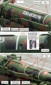
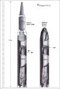

|
Tal Inbar analyzed:
These images indicates, it is a liquid fuel missile
Other analysts estimate that - at least for
the first stage of the rocket - a technology of the Soviet R-27 SLBM is used
(the main engine is placed inside of the fuel tank).
An application of the
R-27 technology would be not a possibility because
about 250 kN thrust of a R-27 engine is not enough for this monster. Two engines
to combine is technically in this case impossible.
An acceptable thrust of about 500 kN has
the engine of a Russian R-29 SLBM (RSM-40 Vysota)
with similar technology.
|
My analysis
|
|

|

A crazy proposal ?
|
Attention analysts, the missile is certainly not yet
complete, but not fake!
I think that the KN-08 is not a fake, and North Korea working on developing
an LRBM. The technology is based on a proven (!!) template. North Korea does
not have the know-how and financial resources to develop such a complicated
missile with new liquid rocket engines.
With high probability is the technology not Chinese. China has never developed
a "submerged engine" technology, or used. Furthermore, it is against China's
doctrine such significant potential of rocket technology to export. China only
supplies to Pakistan missile technology (Shaheen).
The delivery of the large TELs to North Korea must based on a "misjudgment".
The noted differences between the rockets - missing retro-rockets, different
length of cable ducts and different positions of covers - are optical illusions
or evidence for the incompleteness of the rocket. A slightly shifted retaining
band on one rocket (No. 218) is not relevant for the analysis.
But a puzzle for my proposal is the interrupted cable duct between first and
second stage. Why is this interruption on No.18 so short? The interruption
of the cable duct is probably temporary, to place the retaining band. It is
impossible to find an interstage section.
Furthermore, a separation plane between the first and second stage is also
never visible.
|

|
|
Cable duct comparison
|
Want they to confuse us, or is it
a mock-up. Is it really a mock-up, then has but this missile a serious technological
background.
Analysts argue that the use of UDMH/N2O4 as
fuel for the road-mobile missile KN-08 is no option because the risk is not
acceptable. But the refueling would be possible before the launch in the erected
position !
|

|
 |
|
A number of inconsistencies
in the upper part of the rocket, which is obviously a mock-up
|
|

|
New interisting details:
Weldings, small nozzle, inlet for " fuel pump"
Source:
armscontrolwonk.com |
Example of the unique Soviet
/ Russian SLBM Technology


RSM-54 (Shtil) first and second
stage engine unit
|